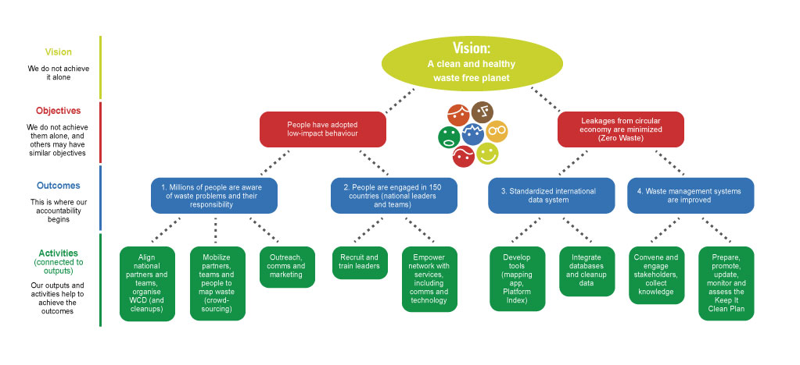

See also:
Notes: Vision ~ Insight ~ Perspective
Romanians everywhere deserve to be connected, proud, and powerful — and their children deserve an identity they can claim with pride.
Vision
A world-class global ethnic community —acting as catalyst for the success of future generations.
Mission
To forge an active, worldwide network of forward-thinking creators and ambassadors focused on channeling diaspora forces and orchestrating strategic change - positioning Romania at the forefront of the global economy and expanding opportunities for generations to come.
RUF’s Unique insights:
1) that there’s a large number of Romanians in the diaspora who continue to care about our country, about our community, who believe in their ability to create real impact, but who lack a framework, a model, and who may not know how to do it, but who would get involved given the opportunity to do so
2) that we have a unique window of opportunity in time, between let’s say 2020-2050, during which this diaspora generation is in its prime.
Mihai Quote
“We believe it’s our destiny to become one of the most transformational generations of Romanians. Through relentless dedication and coordinated action, RUF’s mission is to unite, engage, and empower the Romanian diaspora, and shape Romania into a highly competitive nation in the 21st century.” - Mihai Lehene
Violeta Balan: Feedback: Re your post of yesterday regarding RUF’s mission statement. I did not want to reply there as I don’t want to ruffle too many feathers. I took a stab at drafting it below, but please keep in mind I have not been a part of any discussions regarding RUF’s goals, values, purpose, etc. Back in the day when I helped create statements like these, I remember that it was an extremely long and painful process. We benefited greatly from hiring a trained facilitator to help us craft clear, concise and not over the top, chest pounding sentences. It was so traumatic and satisfying I still remember it like it happened yesterday. Hence, my immediate reaction to your post last night.
Vision Statement: “Our vision is to inspire a generation of Romanians that drives transformative change and helps shape a brighter future for our nation.”
Mission Statement: “Our mission is to unite, engage, and empower the Romanian diaspora through dialogue, education, advocacy, and action, so that together we can help Romania fulfill its potential as a dynamic and competitive nation in the 21st century.”
In essence a vision is the big dream/long term goal and the mission is the plan/journey how to get there. Please see here a good resource about vision and mission statements. https://www.usemotion.com/blog/vision-vs-mission.html And then there are core values. My suggestion above has some of that already but it may not be accurate. Just my 2 cents and humble opinion.
“RUF’s mission is twofold: to transform the Romanian diaspora into one of the most successful and globally influential ethnic communities in the world, and to shape Romania into a highly competitive nation in the 21st century.”
Mihai’s quote
“I am inspired by a vision of Romania as a vibrant and resilient global nation celebrated for its rich cultural heritage and contributions.
Our foundation’s mission is to unite and unlock the vast potential of the Romanian diaspora, transforming it into one of the world’s most connected, influential and impactful ethnic global communities within the next decade.
On top of our existing fundraising platform, we aim to build an accelerator for projects that advance Romania’s growth. With a dynamic presence in over 300 communities around the world and dedicated teams worldwide, we will support civic engagement and empower diaspora civic sector, strengthening Romania’s voice, creating systemic impact through our strategic programs.
We are deeply committed to build a force that not only accelerates progress within Romania but also magnifies our impact on the global stage, creating lasting change for generations to come.“
Here are five alternative introductions for RUF. What is RUF?
Option 1
The Romanian United Foundation (RUF) is a global network driving community engagement and transformative fundraising for Romania’s future. We envision a Romania that stands as a dynamic, prosperous country, where every Romanian proudly celebrates their culture, heritage, and achievements. Our mission is to empower the Romanian diaspora, uniting it into one of the world’s most impactful and interconnected communities.
Option 2
RUF is a global platform dedicated to uniting and empowering the Romanian diaspora. We strive for a future where Romania thrives as a developed, vibrant nation, and every Romanian feels deep pride in our shared heritage and accomplishments. Our mission is to cultivate a powerful network of diaspora members, making it one of the most influential ethnic communities worldwide.
Option 3
At RUF, we connect and mobilize the Romanian diaspora globally to drive meaningful change. We envision a Romania that is strong, progressive, and celebrated, with a diaspora that takes pride in its roots and plays an active role in the country’s development. Our mission is to transform the Romanian diaspora into a leading force of impact and unity across the globe.
Option 4
RUF serves as a global community and fundraising platform committed to Romania’s growth and prosperity. We aspire to see a Romania where every citizen, both local and abroad, celebrates our culture and legacy with pride. By strengthening our connections, we aim to turn the Romanian diaspora into one of the most influential and supportive ethnic networks in the world.
Option 5
The Romanian United Foundation (RUF) is an international hub for community engagement and philanthropic efforts toward Romania’s progress. We envision a thriving, advanced Romania that every Romanian worldwide can celebrate. Our mission is to harness the collective power of the diaspora, forging it into one of the most impactful and united communities globally.
Option 1
The Romanian United Foundation (RUF) is a global incubator and accelerator for projects that advance Romania’s growth. With teams worldwide, we support civic engagement and strengthen the underdeveloped diaspora civic sector through our Accelerator CIVIC program. We envision a Romania that thrives as a developed, dynamic nation, where all Romanians take pride in our culture, heritage, and impact. Our mission is to empower the Romanian diaspora, transforming it into a connected, influential force that drives progress.
Option 2
RUF is a global platform and incubator, empowering the Romanian diaspora to accelerate projects that advance civic and cultural growth. By running teams across the world and fostering engagement through our Accelerator CIVIC program, we are bridging gaps in the civic sector and uniting Romanians worldwide. We envision a Romania that is well-developed, influential, and celebrated by a connected diaspora that proudly carries forward our heritage.
Option 3
At RUF, we operate as a global incubator and accelerator, supporting transformative projects and running teams that drive civic engagement. Our Accelerator CIVIC initiative addresses the underdevelopment of the diaspora civic sector, creating a foundation for meaningful impact. We aspire for a Romania that is progressive and celebrated worldwide, with a united diaspora that fosters pride in our shared culture and heritage.
Option 4
RUF serves as a global incubator and accelerator, mobilizing Romanian talent worldwide to create impactful civic initiatives. Through our Accelerator CIVIC, we address the underdeveloped civic sector within the diaspora, promoting active engagement and transformative growth. We envision a powerful, prosperous Romania, and our mission is to unite Romanians around the globe to build one of the most impactful and dynamic communities in the world.
Option 5
The Romanian United Foundation (RUF) is an international incubator for civic and cultural initiatives, enabling the Romanian diaspora to drive meaningful change. With teams across the globe and programs like Accelerator CIVIC, we address the diaspora's civic sector needs, paving the way for impactful engagement. We envision a world in which Romania is a thriving, respected nation, championed by a connected and empowered diaspora.
Here are five variations of the fifth mission statement, incorporating the three pillars of philanthropy, youth and education, and fostering business and economic development:
Here are five suggested mission statements for the Romanian United Foundation:
Our vision is of a proud Romania, with a high quality of life, where people move to, not from
Our mission is dual
Build a strong Romanian Diaspora and contribute to the development of Romania
By mapping out our diaspora resources worldwide and channeling our forces into impactful macro projects, we plan to create a disruptive framework and a new template for diaspora engagement in the 21st century
We believe it is our duty to preserve our culture and it is our destiny to push Romania ahead on the global stage.
Credem ca este datoria noastra sa ne pastram cultura noastra romaneasca si ca suntem in acelasi timp, ambasadorii Romaniei. Astfel, este datoria noastra sa promovam Romania in lume
We believe in a world full of genuine and passionate people that care about Romania: a world where friends, organizations and entire communities come together to make the world a better place.
We believe that one day, our kids will live in a strong, connected, impactful Romanian Diaspora.
RUF is a 100% pass-through fundraising platform. We help diaspora & local nonprofits in Romania access the funding, tools, training, and support they need to become more effective. We do this by connecting NGOs, donors & volunteers from all over the world. Read more about Our Mission.
Romanian United Foundation: Uniting the Romanian Diaspora
Our mission is to discover, connect & support Romanian Diaspora communities and change-makers, empowering them to create long term impact in the world.
We believe in a world full of genuine and passionate people that care about Romania. We believe that one day, our kids will live in a strong, connected, impactful Romanian Diaspora. We believe in Changing the World, One Romanian at a Time.
Our mission is to connect, shine a light on and elevate the thousands of change-makers in the Romanian Diaspora, creating the means and mechanisms to connect them into a Global Community, and inspire them to create impact in the world.
We fund, promote, and partner with the most impactful non-profit organizations active in Romania and in the Romanian diaspora.
30 years after the Revolution, we believe Romania is at a junction in history, ready to leap forward in full force. An entire generation of 5 Million global citizens awaits to make its own mark.
Our vision is one of a strong Romania, with powerful diaspora forces leading the way.
Our mission is to capture and channel the full force (energies) of our Diaspora and shape the course of the future, contributing to the development of a powerful and democratic Romania and building a Global Romanian Diaspora community in the process.
Our mission is to bring together and channel the latent forces of our Diaspora, building the Romanian Diaspora Community and shaping the course of our future.
RUF's mission is to create a platform for genuine and passionate people that care about Romania to connect and get involved, and to contribute in meaningful way to their future.
The world is full of genuine and passionate people that care about Romania. Our mission is to create a platform for all of us to connect and get involved, and to contribute in meaningful way.
We dare you to reimagine what it means to be a Romanian in the 21st century: a citizen of the world, inspired by progressive European ideals, but rooted in our ancestral simplicity and traditions. Join us. Become part of our community4good. Romanian United Fund: Connect, Inspire, Belong.
We finance and support Romanian and Diaspora grassroots ecosystems while building the largest community of like-minded Romanians in the process
The world is full of genuine and passionate people who care about Romania. RUF's mission is to bring them all together and create the largest Romanian Diaspora community in the world.
RUF creates a global community of philanthropy dedicated to the progress and prosperity of our local communities and Romania
RUF’s mission is to bring together people that are passionate and dedicated to the progress and prosperity of Romania and our Diaspora Communities.
We create a global community where one can connect with like-minded people that want to contribute. We preserve our national identity through philanthropy.
Connecting people who love Romania, empowering them to get involved, contribute, and team up to shape a meaningful future.
The world is full of genuine and passionate people who care about Romania. RUF's mission is to bring them all together and create the largest Romanian Diaspora community in the world.
The world is full of wonderful, passionate people who love Romania. RUF’s mission is to show that we can all work together, to create a better world.
The world is full of wonderful and passionate people who love Romania: dedicated and talented people, who care about ?their community and ?get involved to shape their own future. Our mission is to prove that we can all work together.
Our mission is to mobilize a global network of friends of Romania to create the most impactful community-powered initiatives in Romanian communities abroad and in Romania.
STATEMENT: We fund, promote, and partner with the most impactful non-profit organizations active in Romanian diaspora and in Romania.
RUF connects Romanian nonprofits, donors, and companies in nearly every country around the world. We help local nonprofits access the funding, tools, training, and support they need to become more effective.
Engaging the Romanian Diaspora to support Romania and itself by financing the most impactful grassroots nonprofit organizations and projects
RUF is the most representative philanthropic organization in the Romanian Diaspora.
It starts from a real desire to do good. There is no business, political, or other kind of interest.
To create and finance programs that benefit Romanian communities around the world → strengthening them.
previous mission statements considered inadequate
Our mission is to mobilize a global network of friends of Romania to create the largest community-powered initiative in support of the most worthy Romanian projects and initiatives
STATEMENT: We fund, promote, and partner with the most impactful non-profit organizations active in Romania or in the Romanian diaspora
Read more:
A mission statement describes an organization’s fundamental, unique purpose. It communicates the value the nonprofit delivers, and what groups it serves and how.
The best nonprofit mission statements are a succinct encapsulation of:
We are building the Romanian diaspora institution for 1,000 years.
RUF’s vision is of a strong, connected, and impactful Romanian diaspora, contributing to Romania’s accelerated development in the 21st century (democratic, social, and economic)
RUF este organizatia care aduce impreuna romanii din diaspora care isi doresc sa ramana in continuare conectati si sa contribuie la dezvoltarea Romaniei.
Our vision is one of a strong Romanian Diaspora, with a powerful sense of identity, enriching the cultural fabric of the world and contributing to the development and progress of a democratic Romania.
A united Romanian diaspora, with powerful, connected communities, successfully integrated Romanians, preserving - working together
Vision: “A Strong Romanian Diaspora: a global network of proud, engaged, and successful people, contributing to the development and progress of their own local communities and of Romania.”
Vision: “A Strong Romanian Diaspora: a global network of proud, engaged, and successful people, contributing to the development and progress of their own local communities and of Romania.”
Vision: A strong and connected Romanian Diaspora
Long version: A Strong and Connected Romanian Diaspora, self-sustaining and contributing to the development and progress of a democratic Romania
See also:
Our team comes from a variety of backgrounds, including entrepreneurs, non-profit leaders, professors, lawyers, marketing and management experts, united by our shared commitment to give back and support positive change.
Our board of directors and business sponsors will underwrite RUF’s operating costs, which means that 100% of every donation goes directly to the selected projects.
1) identify the most impactful and meritorious projects
2) Partner with individuals, organization, foundations to form a successful network and channel funds to the projects
3) Learn what are the needs of the projects that will ultimately have an impact
4) Details for project to become reality
Identify worthy projects and promote them
Provide ways to support the causes
We have a dream. - to be the first Romanian organization to identify outstanding projects in areas with most need, promoting them to donors, and raising funds to support such projects
Why - channeling funds could ensure the success of the projects
